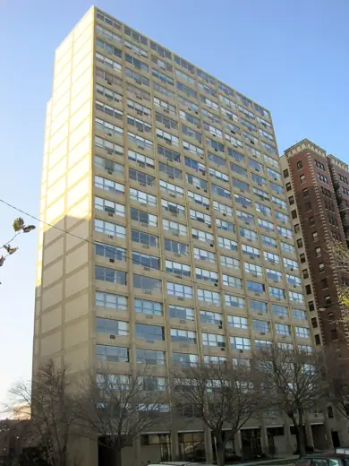

Buildings 37
Sort
 S. R. Crown Hall1956 · Chicago
S. R. Crown Hall1956 · Chicago Rookery Building1888 · Chicago
Rookery Building1888 · Chicago Adler Planetarium1930 · Chicago
Adler Planetarium1930 · Chicago Inland Steel Building1958 · Chicago
Inland Steel Building1958 · Chicago 330 North Wabash1973 · Chicago
330 North Wabash1973 · Chicago Museum of Contemporary Art Chicago1996 · Chicago
Museum of Contemporary Art Chicago1996 · Chicago Everett McKinley Dirksen United States Courthouse1964 · Chicago
Everett McKinley Dirksen United States Courthouse1964 · Chicago Auditorium Building1889 · Chicago
Auditorium Building1889 · Chicago Chicago Cultural Center1897 · Chicago
Chicago Cultural Center1897 · Chicago Palmolive Building1929 · Chicago
Palmolive Building1929 · Chicago Jay Pritzker Pavilion2004 · Chicago
Jay Pritzker Pavilion2004 · Chicago Wrigley Building1924 · Chicago
Wrigley Building1924 · Chicago John Hancock Center1969 · Chicago
John Hancock Center1969 · Chicago Tribune Tower1925 · Chicago
Tribune Tower1925 · Chicago Art Institute of Chicago, Modern Wing2009 · Chicago
Art Institute of Chicago, Modern Wing2009 · Chicago Sullivan Center (Carson Pirie Scott Building)1907 · Chicago
Sullivan Center (Carson Pirie Scott Building)1907 · Chicago Willis Tower (Sears Tower)1973 · Chicago
Willis Tower (Sears Tower)1973 · Chicago Robie House1910 · Chicago
Robie House1910 · Chicago Marina City1964 · Chicago
Marina City1964 · Chicago McCormick Tribune Campus Center2003 · Chicago
McCormick Tribune Campus Center2003 · Chicago Harold Washington Library Center1991 · Chicago
Harold Washington Library Center1991 · Chicago Reliance Building1895 · Chicago
Reliance Building1895 · Chicago Krause Music Store1922 · Chicago
Krause Music Store1922 · Chicago Seventeenth Church of Christ, Scientist1968 · Chicago
Seventeenth Church of Christ, Scientist1968 · Chicago John C. Kluczynski Federal Building1974 · Chicago
John C. Kluczynski Federal Building1974 · Chicago Holy Trinity Orthodox Cathedral (Chicago)1903 · Chicago
Holy Trinity Orthodox Cathedral (Chicago)1903 · Chicago
Promontory Apartments1949 · Chicago 860-880 Lake Shore Drive1951 · Chicago
860-880 Lake Shore Drive1951 · Chicago Aqua Tower2009 · Chicago
Aqua Tower2009 · Chicago Lake Point Tower1968 · Chicago
Lake Point Tower1968 · Chicago Richard J. Daley Center1965 · Chicago
Richard J. Daley Center1965 · Chicago Chicago Board of Trade Building1930 · Chicago
Chicago Board of Trade Building1930 · Chicago Joseph Regenstein Library1970 · Chicago
Joseph Regenstein Library1970 · Chicago River City1986 · Chicago
River City1986 · Chicago Rockefeller Memorial Chapel1928 · Chicago
Rockefeller Memorial Chapel1928 · Chicago